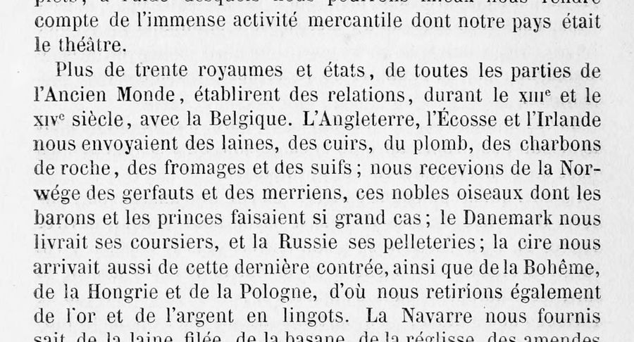
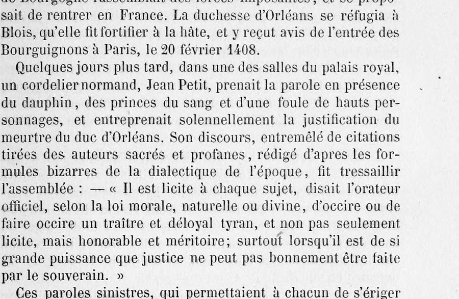

“Plus de trente royaumes et états” (tome I, p. 234)
French: Brussels 1861, tome I, p. 234, scan. Highlighted: what Lecky reports.

A most curious document, published by M. Warnkönig, gives us fuller information … More than thirty kingdoms and states, from every part of the Old World, entered into relations with Belgium during the thirteenth and fourteenth centuries. England, Scotland and Ireland sent us wool, hides, lead, sea-coal, cheeses and tallow; from Norway we received gerfalcons and stave-wood …; Denmark supplied its chargers, and Russia its furs; wax came to us from Russia too, and from Bohemia, Hungary and Poland, from which we also drew gold and silver in ingots. … Aragon sent Flanders its saffron and rice; the land of Liège its copper, and Germany its wines, corn and iron. … the furs of Fez, Tunis and Bougie; raw sugar from Morocco; alum from Majorca and Constantinople; dates from the Atlas; spices from Egypt, Palestine and Armenia; and finally cloth of gold, so rich and elegant, which our merchants brought by way of Tartary.
Original French
Un document des plus curieux, publié par M. Warnkœnig, nous fournit des renseignements plus complets … Plus de trente royaumes et états, de toutes les parties de l’Ancien Monde, établirent des relations, durant le XIIIe et le XIVe siècle, avec la Belgique. L’Angleterre, l’Écosse et l’Irlande nous envoyaient des laines, des cuirs, du plomb, des charbons de roche, des fromages et des suifs; nous recevions de la Norwége des gerfauts et des merriens …; le Danemark nous livrait ses coursiers, et la Russie ses pelleteries; la cire nous arrivait aussi de cette dernière contrée, ainsi que de la Bohême, de la Hongrie et de la Pologne, d’où nous retirions également de l’or et de l’argent en lingots. … l’Aragon envoyait en Flandre son safran et son riz; le pays de Liége ses cuivres, et l’Allemagne ses vins, ses blés et ses fers. … les pelleteries de Fez, de Tunis et de Bugie; les sucres bruts venant du Maroc; les aluns de Majorque et de Constantinople; les dattes de l’Atlas; les épices de l’Égypte, de la Palestine et de l’Arménie; et enfin les draps d’or, si riches et si élégants, que nos négociants faisaient venir par la Tartarie.
“Honorable et méritoire”: Jean Petit and the murder of Orleans (tome II, pp. 48–49)
French: Brussels 1861, tome II, pp. 48–49, scan of p. 49. Abridged; p. 48 from the OCR. Highlighted: what Lecky draws on.

[p. 48] … He had reached the front of the house of the marshal de Rieux when some twenty men suddenly rushed upon his escort, while a Norman gentleman, Raoul d’Auquetonville [as in the OCR], threw himself on the duke himself and struck him with an axe. The prince, half stunned by the blow, had only time to cry out: “What are you doing? I am the duke of Orleans!” A voice answered: “That is who we are looking for!” …
[p. 49] A few days later, in one of the halls of the royal palace, a Norman Franciscan, Jean Petit, spoke in the presence of the dauphin, the princes of the blood and a crowd of great personages, and solemnly undertook the justification of the murder of the duke of Orleans. … “It is lawful for every subject,” said the official orator, “by the moral, natural or divine law, to kill or have killed a traitorous and disloyal tyrant, and not only lawful, but honourable and meritorious; above all when he is of such great power that justice cannot well be done by the sovereign.” These sinister words, which allowed everyone to set himself up as judge and executioner, raised no protest.
Original French
[p. 48] … Il était arrivé en face de l’hôtel du maréchal de Rieux, lorsqu’une vingtaine d’hommes se précipitèrent tout à coup sur son escorte, tandis qu’un gentilhomme normand, Raoul d’Auquetonville, s’élançait sur le duc lui-même et le frappait d’un coup de hache. Le prince, à moitié étourdi par le choc, n’eut que le temps de s’écrier: « Garde que fais-tu! Je suis le duc d’Orléans! » Une voix lui répondit: « C’est ce que nous quérons! » …
[p. 49] Quelques jours plus tard, dans une des salles du palais royal, un cordelier normand, Jean Petit, prenait la parole en présence du dauphin, des princes du sang et d’une foule de hauts personnages, et entreprenait solennellement la justification du meurtre du duc d’Orléans. … « Il est licite à chaque sujet, disait l’orateur officiel, selon la loi morale, naturelle ou divine, d’occire ou de faire occire un traître et déloyal tyran, et non pas seulement licite, mais honorable et méritoire; surtout lorsqu’il est de si grande puissance que justice ne peut pas bonnement être faite par le souverain. » Ces paroles sinistres, qui permettaient à chacun de s’ériger en juge et en bourreau, ne soulevèrent aucune protestation.
Van Bruyssel calls Jean Petit a cordelier, a Franciscan, the point Lecky says “a writer in the Journal des Sçavans of 1748” disputed. The rest of Lecky’s parenthesis, that the duke who instigated the murder was himself assassinated, is not on these two pages.
Further down the rabbit hole
Sources that Lecky cites in the notes next to the ones that cite this page.
- Paramo, De origine et progressu officii sanctae inquisitionisWhy the dead are tried for heresy
- Bédarride, Les Juifs en France, en Italie et en EspagneWhen Christianity came to power, the Jews’ persecution began, and a Pope wrote that God does not rejoice in bloodshed
- Storch, Cours d’économie politiqueA tutor to the Russian grand dukes on usury laws that backfire
- Mariana, De rege et regis institutioneBook I, chapter 6, “Is it lawful to kill a tyrant?”
- Pecchio, Storia della economia pubblica in ItaliaNo manuscript of Roman laws on this page
- Champagny, La Charité chrétienne“Senators labouring in the cells, artisans at rest!”: the early Church in defence of work


Backlinks
Every place in Rationalism in Europe that links to this page (generated automatically when the site is built).